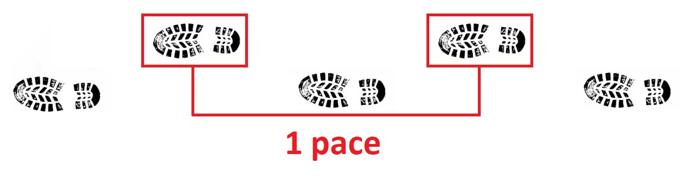

In response to many of our trainees asking for additional practice mapwork we have compiled a series of supplemental problems that you can use to self-study. These example questions are similar to the type of work you will be completing during training. Each problem has the answer hidden. When you are ready to check your work simply click "Show/Hide Answer" to reveal the solution. Click again to hide it.
Tools
In order to complete this supplemental coursework you will need some basic tools. These items are included in the navigation kit that you will receive at Course B. However, if you have not yet received your navigation kit then these printable versions will be sufficient for now.
Pencil - Pencils are preferable because you may need to make corrections or revise your plan.
Ruler - A tenths ruler makes calculations easier than a standard ruler. Tenths Ruler PDF
Protractor - A 360° protractor, clear is preferable. Protractor PDF
Calculator - A basic calculator for doing simple math.
Coordinate Systems
The most common coordinate systems used in search and rescue are Latidude/Longitude and UTM. For the purposes of this supplemental coursework we will stick to these and assume the WGS-84 datum. Below is some useful information to review. There are plenty of resources available online if you want to delve into more detail or learn about other coordinate systems.
Latitude/Longitude
Coordinates in Latitude and Longitude are expressed as some combination of Degrees, Minutes, and Seconds. There are 60 minutes in a degree, and 60 seconds in a minute. You can convert between formats using simple division and multiplication. You are likely to encounter them in the following formats:
N47.5068° W121.7390° - Degrees Only ("Decimal Degrees")
N47°30.408' W121°44.341' - Degrees and Minutes ("Degrees Decimal Minutes")
N47°30'24" W121°44'20" - Degrees, Minutes, and Seconds ("Degrees Minutes Seconds")
Universal Transverse Mercator (UTM)
Coordinates in UTM are expressed in meters and in the context of a Grid Zone. The Grid Zone is determined based on a system of "Zones" and longitudinal "Bands". For the purposes of this coursework it is sufficient to know that ESAR's primary area of operations lies in the 10T Grid Zone. UTM coordinates describe a position within the Grid Zone as an Easting and Northing; the distance, in meters, east and north from the southwest corner of the Grid Zone:
10T 0549596E 5262255N - Grid Zone, Easting, and Northing
You are riding with 4x4 to your assignment location. The assignment begins 1100 meters past a forest service gate. The 4x4 driver can use their trip meter to help determine how far to drive. How many tenths of a mile should they drive?
Convert N47°32'28.1" W122°10'28.2" to Decimal Degress.
Answer:
N47.541138° W122.174500°
Explanation: First convert the Seconds to Decimal Minutes:
Latitude: 28.1 seconds / 60 = .4683 minutes
Longitude: 28.2 seconds / 60 = .4700 minutes
N47°32.4683' W122°10.4700'
Next convert the Minutes to Decimal Degrees:
Latitude: 32.4683 minutes / 60 = .541138 degrees
Longitude: 10.4700 minutes / 60 = .174500 degrees
N47.541138° W122.174500°
Pacing is a method to keep track of distance.
A pace is the distance that you travel while walking each time the same foot hits the ground. For example, if you lead (take your first step) with your left foot, then you will count a pace each time your right foot touches the ground. For the purposes of ESAR Basic Training we generally refer to pace in terms of feet.

Joe is calculating his pace. If he walks 1000 feet in 196 paces, what is the length of his pace?
Answer:
5.10 feet
Explanation:
Joe's pace can be calculated by simply dividing the distance he travelled by the number of paces he took:
1000 feet / 196 paces = 5.10 feet
Susan's pace is 4.5 feet. If she needs to travel 1140 feet how many paces does she need to take?
Answer:
Approximately 253 paces
Explanation:
Since the distance and Susan's pace are already expressed in the same units (feet), we can simply divide:
1140 feet / 4.5 feet = ~253 paces
Michael's pace is 4.8 feet. If he needs to travel 235 meters how many paces does he need to take?
Answer:
Approximately 161 paces
Explanation:
Because the distance that Michael needs to travel is expressed in meters, first we need to convert it to feet. By checking the conversion table, we know that 1 meter = 3.28 feet.
First Convert to Feet: 235 meters * 3.28 feet = Michael needs to travel 770.8 feet
Megan and Zoe have partnered for a compass run. Megan's pace is 4.7 feet and Zoe's pace is 5.25 feet. During the compass run both Megan and Zoe were counting their paces, but Zoe forgot what her count was. They stop to confer. Megan has counted 57 paces so far. If Zoe returns to Megan's position, what should her current pace count be?
Answer:
Approximately 51 paces
Explanation:
First we need to know how far the pair has travelled based on Megan's pace count:
57 paces * 4.7 feet = ~268 feet
Next we can calculate how many paces Zoe should have taken by this point:
268 feet / 5.25 feet = ~51 paces
In order to complete this set of problems you will need to print and familiarize yourself with The Map .
Use information available on the map to determine the scale, then check your answer by calculating the distance, in feet, between the ends of the bracket at the bottom of the map, where it says "Check Scale Here."
Answer:
The width of the bracket is approximately 1056 Feet
Explanation:
The scale of the map may vary depending on how it was printed. We'll need to use information that is printed on the map to determine its scale. The best indication of scale on this map is the UTM grid, the width of which is a known distance, 1000 meters.
To calculate the scale:
Measure the distance between the UTM grid lines on the map using your preferred unit of measure, generally either inches or centimeters.
Divide 1000m by your measurement, for example if you measured the grid to be 5 inches wide: 1000m/5in = 200m/in.
Next, convert meters to feet (1m = 3.28ft). Continuing the example from above, 200m/in * 3.28ft/m = 656ft/in. This is your scale!
Finally to check your answer, measure the distance between the ends of the bracket, then multiply by your scale. e.g. 1.6in * 656ft/in = 1056 feet.
Plot 10T 0619350E 5253637N
Explanation:
The bottom of Julie's Chair
Plot 10T 0619708E 5252790N
Explanation:
Intersection northwest of the Fire Station
Plot 10T 0619693E 5253869N
Explanation:
Intersection of Pacfic Crest Trail and Old Commonweath Trail
Plot 10T 0619083E 5253522N
Explanation:
~3200 Foot Elevation on the Pacific Crest Trail
Plot 10T 0619104E 5252818N
Explanation:
Near the top of Easy Rider Chair Lift
Plot 10T 0619047E 5253858N
Explanation:
Pacific Crest Trailhead - Summit West
From the intersection at 10T 0619742E 5252932N walk northbound on the road for 216m.
Explanation:
On WA 906 in front of the Museum
Follow the Dodge Ridge Chairlift uphill until you reach 3160ft elevation, then travel 355ft on a bearing of 186°T
Explanation:
On the slope between the Dodge Ridge and Little Thunder Chairlifts
King County Explorer Search & Rescue (ESAR) is a 501(c)(3) Volunteer Organization.
Our members respond to over 150 emergencies every year.
ESAR is King County's primary wilderness ground search and rescue organization. Our members are outdoor enthusiasts with a passion for helping those in need. 100% of funding for training, operations, and critical, life-saving equipment comes from generous donations by local businesses, the communities that we serve, our volunteers, and people like you.